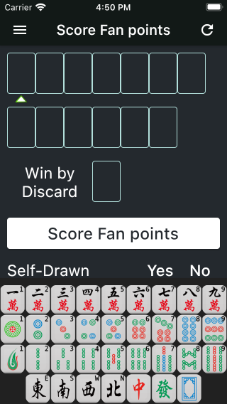
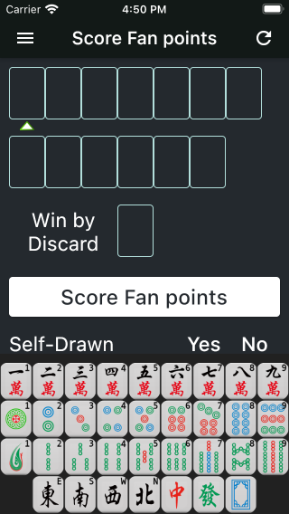

《麻将宝典》是一款根据世界麻将组织2014年修订版国际《麻将竞赛规则》进行编写的iOS平台App。V2.0.0主要功能包括麻将计算番数、麻将教学，后续版本会添加更多功能。
'Mahjong Bible' is an iOS app which is based on the 2014 revised international 'Mahjong Competition Rules' published by the World Mahjong Organization. V2.0.0 includes scoring Fan points, Mahjong teaching, and the subsequent version will add more features.
下载链接： App Store
Download Link： App Store
要输入麻将，请首先点击界面上方的输入位置，此时被点击的位置下方会出现输入提示三角，同时键盘会自动弹出。您可以通过键盘输入麻将，如下图。
To enter mahjong, please first tap the input position at the top of the interface, the input prompt triangle will then appear under the position, and the keyboard will pop up automatically. You can enter mahjong through the keyboard, as shown below.
 

对于暗杠、明杠、碰牌和吃牌的情况，请先输入第一张牌，然后点击键盘上方功能区中对应的功能按钮即可。 例如，如果想输入暗杠3条，首先在界面上方点击输入位置，然后在键盘中点击3条，最后点击键盘上方的暗杠按功能钮即可。 再例如，要输入吃牌345万，首先在界面上方点击输入位置，然后在键盘中点击3万，最后点击键盘上方的吃牌按钮即可，程序会自动补齐4万和5万。如下图所示。
For Concealed Kong, Melded Kong, Pung and Chow, please enter the first mahjong, and then tap the corresponding function button above the keyboard. For example, if you want to input a Kong of Bamboo 3, first click a position at the top of the page, then tap Bamboo 3 on the popup keyboard, and finally tap the Concealed Kong function button above the keyboard. Another example is when you want to input a Chow of Character 3,4,5, first click a position at the top of the page, then tap Character 3 on the popup keyboard, and finally tap the Melded Chow button, the Character 4 & 5 will be added automatically. As shown below.


需要注意的是，有些功能键在特殊情况下不可用，例如字牌（东南西北中发白）是无法吃牌的，所以此时不显示明顺、暗顺按钮。
Please keep in mind that some function buttons are not available in special cases. For example, the Honor Tiles(East, South, West, North, White Dragon, Red Dragon and Green Dragon) cannot make a Chow, so at this time the Concealed Chow and Melded Chow buttons are not displayed.
当输入完成后点击'算番'按钮，App会开始计算番数并显示计算结果。如果输入有误，App会提示错误信息。
When complete entering all Mahjong, tap the 'Score fan points' button and App will score the points. If there is an error, the App will prompt you with an error message.。
在'算番'按钮下方可以设置其他信息，如自摸、绝张、圈风和门风等。
you can setup other information below the 'Score fan points' button, such as Self-Drawn, Last Tile, Prevalent Wind and Seat Wind, etc.
点击页面左上角功能键将打开抽屉页，点击'番种定义'可以查看全部番种的详细定义。
Tap the function button at the top left corner of the page, the drawer page will be opened. Tap the 'Fan definitions' item to see the detailed definition of all Mahjong Fans.
点击抽屉页中的'意见与建议'可以以邮件形式反馈您的意见和建议，我会第一时间进行解答，感谢您的支持！
Tap the 'Comments and Suggestions' item in the drawer page to feedback your comments and suggestions by email. I'll be the first time for you to answer and hear. Thanks for your support!
App作者：李朴之
App developer: 李朴之 (Puzhi Li)